System Biology
课程描述：Systems Biology 2018 ／ Uri Alon
下文默认公式中的 $X$、$Y$ 指它们的浓度
研究手法：x-nullcline 即 $\frac{dx}{dt}=f(x,y)=0$ 的曲线，这条线上 x 方向的变化率为零；相似的还有 y-nullcline 。x/y-nullcline的交点是系统静止或平衡的状态
Lecture 1 Removal/Production
人的 GRN 由约 4500 Gene、10k edge 组成，单个 TF 可以影响 1-1000 个基因，单个基因也可以由 0-6 个 TF 共同调控。
假设有一个 TF $X$ 遇见糖分后形变为激活态 $X^{+}$，随后 $X^{+}$ 与 Promoter Zone 结合，影响转录 gene $Y$ 的效率。一般通过实验数据推断 $X^{+}$ 对 $Y$ 的影响。
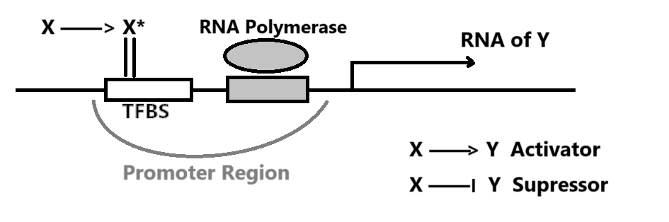
可观测到的 $Y$ 生成速率 $\frac{dY}{dt} = \beta - \alpha Y$ 可由 Removal Rate $\alpha$ 以及 Production Rate $\beta$ 简单表示。
一般而言，生物体出于能源考虑，不会频繁降解蛋白，对于一些细菌而言降解周期是它们的一生。忽略 $\alpha = \frac{1}{Y寿命}$ 时， $Func(\beta,n,k)$ 大体上的表现如下图示。
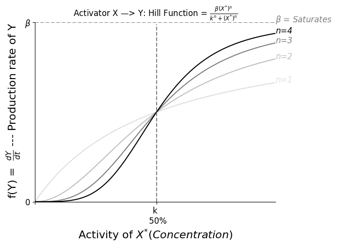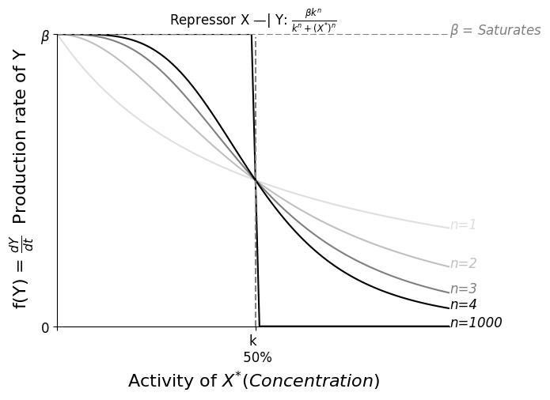
Steady State 时 $0 = \frac{dY}{dt} = \beta - \alpha Y$，即 $Y_{st} = \frac{\beta}{\alpha}$
假设我们从乌有开始生成 $Y$，即突然使其 $\beta: (0 \rightarrow 1)$，则这个瞬间 $$\frac{dY}{dt} = 1 - \alpha Y_{st}$$ $$Y = Y_{st} （1-e^{-\alpha t}）$$
随着时间变化，达成理论稳态的一半 $Y = \frac{1}{2} Y_{st}$，所需时间 $T_{\frac{1}{2}} = \frac{log2}{\alpha}$
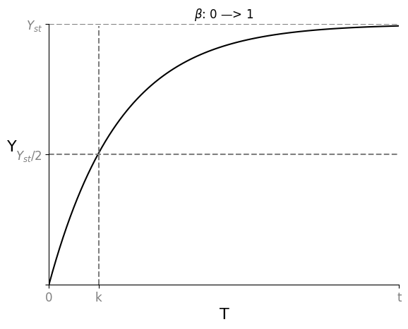
假设现有一个初始的 Steady State $Y_{st}^{Old}$，突然使其 $\beta: (1 \rightarrow 0)$，则这个瞬间 $$\frac{dY}{dt} = 0 - \alpha Y_{st}^{Old}$$ $$Y = Y_{st}^{Old} e^{-\alpha t}$$
随着时间变化，达成旧稳态的一半 $Y = \frac{1}{2} Y_{st}^{Old}$，所需时间 $T_{\frac{1}{2}} = \frac{log2}{\alpha}$
随着时间变化，达成新稳态 $Y = 0$，所需时间 $T = \infty$
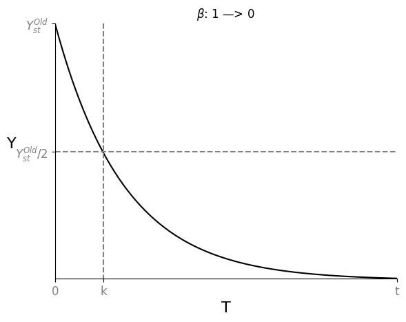
如此，Removal Rate $\alpha$ 才是达成 $\frac{Y_{st}}{2}$ 的关键。有丝分裂即 $Y_{st} \rightarrow \frac{Y_{st}}{2}$，可以根据 Cell Generation Time $T_{\frac{1}{2}}$ 来估算 $\alpha$
Lecture 2 Self-Loop
回顾 GNN 课程，我们一般会通过对比随机图（networkx里也提供多种模型）来获得一些显著的 Motif，我们也可以很容易的解释这些 Motif 的生物意义。
Negative Auto-regulation (NAR) 即是负反馈的 Self-Loop
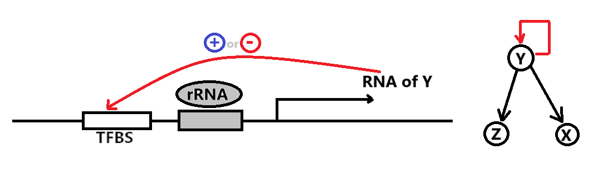
已知 NAR 情况下，随着时间的推进，Production Rate $\beta = f(Y)$ 随着产物浓度 $Y$ 的升高而递减（左图）
相比于恒定的 $\beta = b$（右图），当 $\alpha$ 或 $\beta$ 发生变化时，NAR 曲线的 $Y_{st}$ 变化较小（抵挡噪音），且未平衡时其 $\beta-\alpha$ 曲线间的 Gap 较恒定 $\beta$ 更大（加速达成 $Y_{st}$）
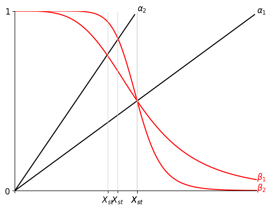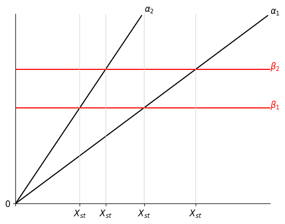
再换一个角度，假设 $\alpha = 0$，想象 $\beta = f(Y) = \begin{cases} \beta \quad Y<k \\ 0 \quad Y \ge k \end{cases} $ 的情况，此时
Y bt
| /
| /________ Y_st = k 是最终平衡状态
| / 防止无止境的生成产物
|/___________
0 t
Positive Auto-regulation (PAR) 是一种正反馈的 Self-Loop，提供了某种惯性（或记忆），对于发育过程 GRN 而言很重要。
一共有如图所示的 $Y_{low}$, $Y_{阈值}$, $Y_{high}$ 三个 Steady State。观察 $\frac{dy}{dt}=\beta-\alpha$ 的符号（哪一条线在上方），可知会有两种最终结局。
具体来说，即使信号消失，但只要 $Y$ 跨越了阈值，它依然会上升至 $Y_{high}$，否则会下降回 $Y_{low}$
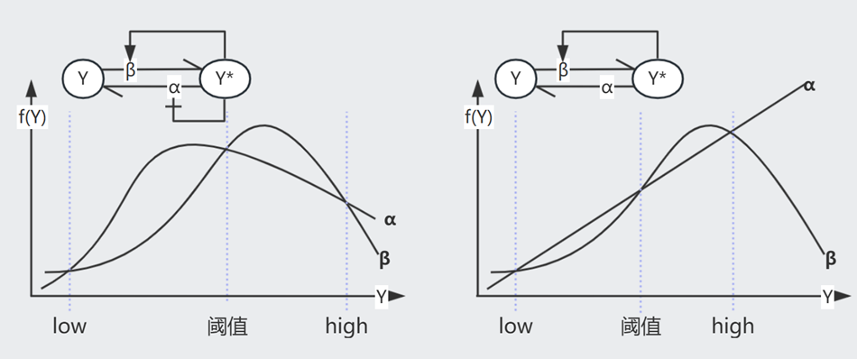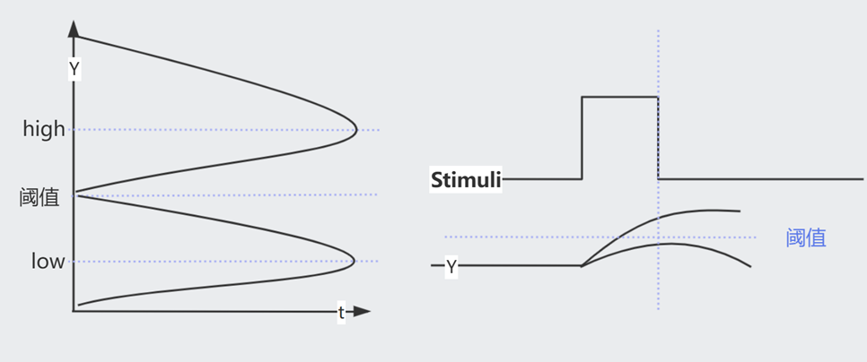
注意，PAR 可以同时影响 $\alpha$ 和 $\beta$（图一），相较于只影响 $\beta$ 的情况（图二），此时它可以在更大程度的变化中保存三个交叉点
Lecture 3 FFL-Gate
三元素的Motif中有8种 Feed Forward Loop (FFL)，最主要的2种在E.coli网络中占80%
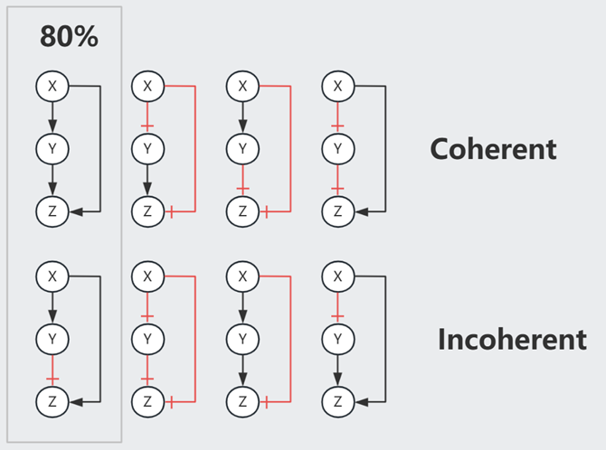
以 Type-1 Coherent FFL (C1-FFL) 为例，我们可以假设 $Z$ 通过一个 Gate 处理来自 $X$ 和 $Y$ 的信号。
当 $X$ 打开或关闭的瞬间，其下游的 $Y^{+}$ 需要一段时间才能达到 k 浓度（开关阈值）。
AND Gate 时，打开 $X$ 后由于需要等待达成 $Y^{+}$，因此生成 $Z$ 的时间相较于 $X$ 的变化有延迟。而关闭 $X$ 则对 $Z$ 即刻起效。这个机制可以过滤掉短暂的激活信号，但灵敏应对任何抑制信号。
OR Gate 时，打开 $X$ 对 $Z$ 即刻起效，而关闭 $X$ 则效果延迟。
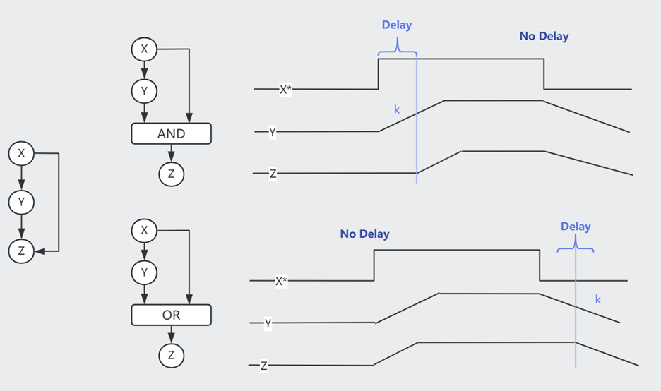
注意，当 Node 间是抑制作用时，Strong Supression 令下游产物归零，Partial Supression 虽然令下游产物的 $Z_{st}$ 降低，但事实上缩短了达成此 low $Z_{st}$ 水平所需的时间，因此也可以被视为一种加速手段。以下图 Incoherent FFL 为例
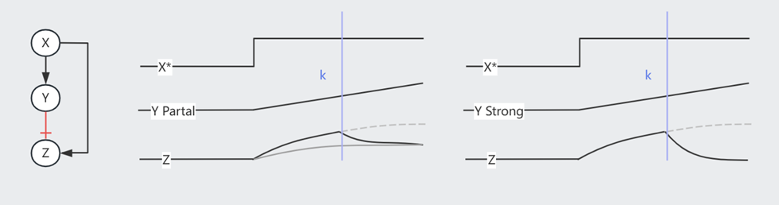
想象一下，在面对急性压力时，会唤起快速响应的Loop；当压力转变为长期状态时，打开了其它较慢的Loop。
Lecture 4 FFL-More
Single Input Model (SIM) 常见于一系列基因的调控（e.g.操纵子中），以 Arg 生成为例，其生成需要一系列基因（$argA/B/C$）的参与。在 Arg 浓度充足的情况下，$argR^{+}$处于激活态，抑制这一系列基因，不再生成 Arg；而当 Arg 浓度不足时，$argR^{+}$ 在自抑制 Loop 的影响下逐渐衰减，$argA/B/C$ 依次激活（对$argR^{+}$浓度耐受阈值不同），开始生成 Arg。
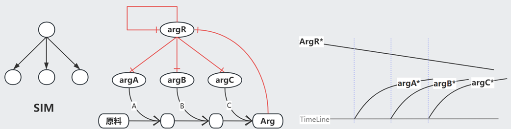
Multi-output FFL 类似于一种多层调控（总开关/小开关）
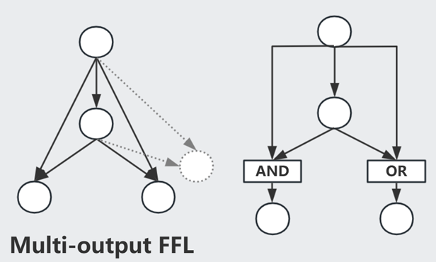
Bifan 一般组成 Dense Overlapping Regulons
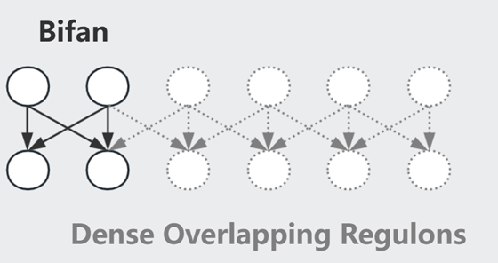
此外，我们还需要注意速度的影响（e.g.转录速度不同），Graph 中-->可快可慢，组合在一起用则称为 hybrid network motif made of fast and slow interaction
关于 Mutual Regulation 展开想象：
X <--> Y 常见，结局：(X AND Y)=High OR (X AND Y)=Low
X |--| Y 常见，结局：(X OR Y)=High
X |--> Y 不稳定，会形成(High,Low,..)震荡的曲线
Lecture 5 Bifunctional Components
细胞信号通路常见的一个模式是磷酸化：细胞膜表面受体 X 被外界的信号分子 S 激活、将 Y0 磷酸化为 Yp，同时有一组 Z 帮助 Yp 去磷酸化为 Y0。
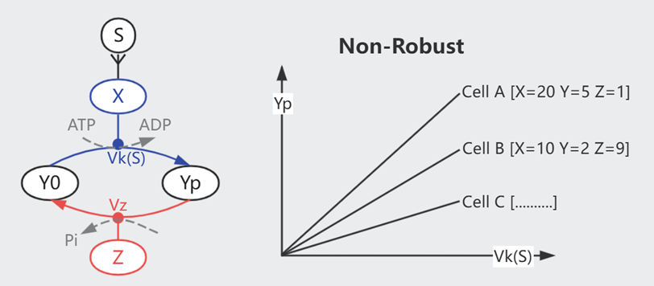
我们可以假设上图的简单模型，平衡状态下 $$\frac{dYp}{dt} = Vk \cdot Y0 \cdot X - Vz \cdot Yp \cdot Z = 0$$
$$Yp = \frac{ Vk \cdot Y_{All} \cdot X}{Vz \cdot Z + Vk \cdot X}$$
如此，最终的信号强度 Yp 受到细胞蛋白水平（X/Y/Z）的影响。而已知每个细胞内的蛋白分布并非一致，但它们可以对外界刺激保持同步的反应（同类型的细胞），简单模型无法对此进行解释。

上图的双功能组件 X 可维持信号的 Robustness。每输入一个ATP则生成一个磷酸基(Pi)、由Xp向Y传递，X0则作用相反。
只考虑模型的输入输出，平衡状态下
$$\text{Phosphorylation}= \text{Dephosphorylation}$$
$$\text{ATP Consumption}= \text{Dephosphorylation}$$
$$Va \cdot X0 = Vp \cdot X0 \cdot Yp$$
$$Yp = \frac{Va}{Vp}$$
与细胞的蛋白水平无关了！
（以上只是 0.1 seconds 尺度的概念模型，不属于长期调控；而且 ATP、Y总量、...不会是无限的，所以 Yp 会有一个上限）
Lecture 6 Integral Feedback
在漫游的过程中，细菌会依据化学物质的梯度变化调节其翻滚转向的频率，以此保证前进方向的正确，即是趋化性（Chemotaxis）。
如果只是改变一次化学浓度，翻滚频率在最初的激烈变化后，将逐渐回复到最初的水平（Exact adaptation），即已逐渐适应新浓度。
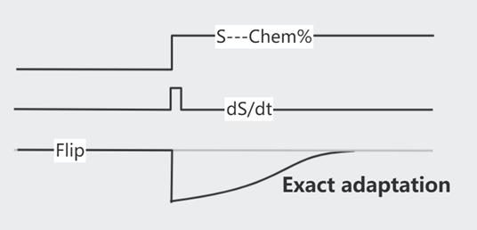
这个适应过程是依靠 Methelylation/Demethelylation 达成的，注意，甲基化修饰较缓慢(~min)，曲线较为平缓。
平衡状态下，$\frac{dm}{dt} = \text{Add M} - \text{Remove M}= 0$ 即
$$\text{Add M [Const rate]}= \text{Remove M [Increase with Xm]}$$
$$V_R \cdot R= V_B \cdot B \cdot Xm_{st}$$
$$Xm_{st} = \frac{V_R \cdot R}{V_B \cdot B}$$
换句话说，$\frac{dm}{dt} = V_B \cdot B (Xm_{st} - Xm)$，即 $m= \int error = \int (Xm_{st} - Xm)$ 是一种典型的 integral feedback，可以快速响应周围的变化直至达成新的平衡。
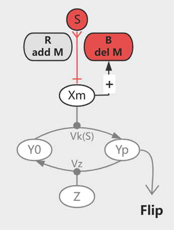
在这个模型中，原本活跃的受体被 Stimuli 抑制（如下图），其活跃度的 $k \sim e^{\Delta G}$。而甲基化会增加自由能，于是 $k \sim e^{\Delta G + m\gamma}$，即以指数级提高 $k$。
（回忆一下，$k$ 指 50% 受体被结合时的 Stimuli 浓度）
从生物意义来讲，甲基化使得受体得以适应更高浓度的刺激，例如逐渐适应噪音/气味环境。（在一定范围内，因为甲基化也不是无限的）
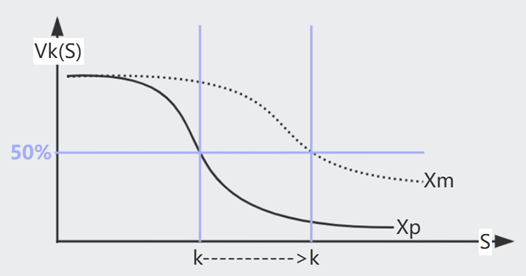
总之，在这个反馈中，Add Methyl 的速率是恒定的，由 Del Methyl 的速率来动态的适应刺激信号的强度。不同的个体可以有不同的甲基化能力，但终究还是会达成 Exact adaptation，区别只在于平衡时的 Flipping Rate，也算是种群的一种多样性吧。
Lecture 7 Fold Change Detection
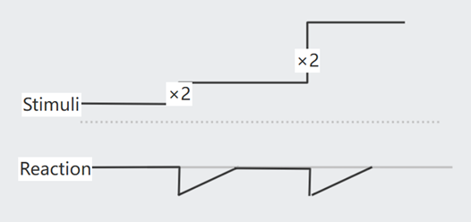
在安静环境中，我们或许可以感知到微小的声音；但在嘈杂环境中，只能感受到较大的音量。Fold Change Detection (FCD) 使我们能够基于环境决定感受的阈值，不至于对细小变化过于敏感。
FCD: 如果 $s_0 \rightarrow Const \cdot s_0$，Reaction 幅度将保持不变
可以整合不同的 FCD 信号（$C_1 \cdot C_2 \cdot ...$）
简化一下 Lecture 6 的模型图：假设 $Xm \sim Action$，
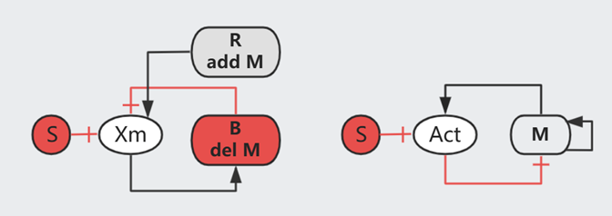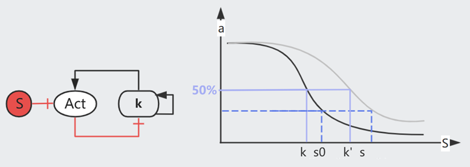
已知，甲基化的 $k \sim e^{\Delta G + m\gamma}$，即 $k = k_0 e^{m\gamma}$，于是
$$\frac{dk}{dt} = k_0 \gamma e^{m\gamma} \frac{dm}{dt} = \gamma k \frac{dm}{dt} = \gamma k \cdot V_B \cdot B (Xm_{st} - Xm) = Const \cdot k (Xm_{st} - Xm)$$
$$\text{即，在这个时刻 }\begin{cases} \frac{dk}{dt}= C \cdot k(a_{st} -a) \\ a = f(\frac{s}{k}) \quad \text{即 HillFunc = } \frac{1}{1+(\frac{s}{k})^n} \end{cases} $$
证明这个机制可达成 FCD：
回忆一下，$k$ 指 $a = f(\frac{s}{k})$=50% 时的 Stimuli 浓度，$k$ 与 $s$ 共享一个 scaling factor，假设一次变换是 $s_0 \rightarrow s$
$$\text{rescale k and s，得到}\begin{cases} \frac{d k'}{dt}= C \cdot k'(a_{st} -a) \\ a = f(\frac{s/s_0}{k/s _0} ) = f(\frac{\text{Fold Change}}{k'}) \end{cases} $$
这样来看，只要每次 $s$ 的 Fold Change 程度一致，Action $a$ 的烈度也会一致，而与变化的初始状态 $s_0$ 无关
另一方面，Incoherent FFL I (Y-Strong) 时，若 Y >> k
{kind=link}
$$\begin{cases} \frac{dy}{dt} = \beta_1 X - \alpha_1 Y = 0 \quad \text{解得 } Y_{st} = \frac{\beta_1 X_{st}}{\alpha_1} \sim X_{st} \\ \frac{dz}{dt} = \frac{\beta_2 X}{k + Y} - \alpha_2 Z = 0 \quad \text{解得 } Z_{st} = \frac{\beta_2 X_{st}}{(k + Y_{st})\alpha_2} \approx \frac{\beta_2 X_{st}}{Y_{st}\alpha_2} = \frac{\beta_2 X_{st} \alpha_1}{\beta_1 X_{st} \alpha_2} = Const \end{cases}$$
证明这个机制可达成 FCD：即如果每次 $x$ 的 Fold Change 程度保持不变，$z$ 将保持不变
假设一次变换是 $x \rightarrow Cx$，，则此时 $(x,y,z) \rightarrow (Cx,Cy,z)$，且 $(\frac{dy}{dt},\frac{dz}{dt}) \rightarrow (C\frac{dy}{dt},\frac{dz}{dt})$
将上述声明带入原式，约去C后，方程与上文一致
$$\begin{cases} C\frac{dy}{dt} = C \beta_1 X - C \alpha_1 Y \\ \frac{dz}{dt} = \frac{C \beta_2 X}{Ck + CY} - \alpha_2 Z \end{cases}$$
Lecture 8 Dynamic Compensation
人体维持着动态的平衡，以血糖调控为例：进食后血糖升高，胰岛B细胞分泌胰岛素令体细胞储存 Glucose、以此降低血糖。
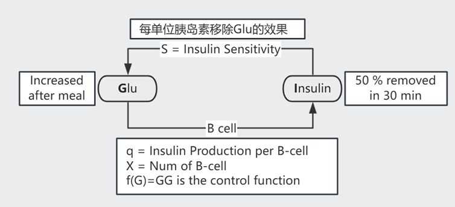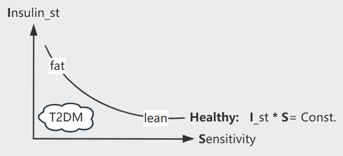
$$ \text{如图示 }\begin{cases} \frac{dG}{dt} = meal - SIG \quad \text{血糖}\\ \frac{dI}{dt} = qXf(G) - \alpha I = qXG^2 - \alpha I \quad \text{胰岛素}\\ \frac{dX}{dt} = X (\text{proliferation} - \text{death}) \quad \text{B cell 数量} \end{cases}$$
解 $\frac{dG}{dt} = 0$ 得 $G_{st} = \frac{meal}{SI_{st}}$
解 $\frac{dI}{dt} = 0$ 得 $G_{st}^2 = \frac{\alpha I_{st}}{qX} = \frac{\alpha}{qX} \frac{meal}{S G_{st}}$，即 $G_{st} = (\frac{\alpha \cdot meal}{qXS})^{1/3}$
由表达式可知，假如 B cell 数量恒定，Insulin resistance ($S \downarrow$) 的病人的血糖 $G$ 将异常高，然而事实上 80% 的病人在此阶段可以维持正常的 $G$，这是因为 B cell 数量进行了代偿（~ weeks）
但血糖过高会造成 B cell 死亡，糖酵解造成的 oxidative stress 即 Glucotoxicity，每个人的耐受程度由基因决定。长期高糖会陷入某种 vicious cycle，最终造成二型糖尿病（T2DB）
Glucotoxicity 某种意义上也避免生成过于敏感的 B cell，因为它们在低浓度时即被杀死
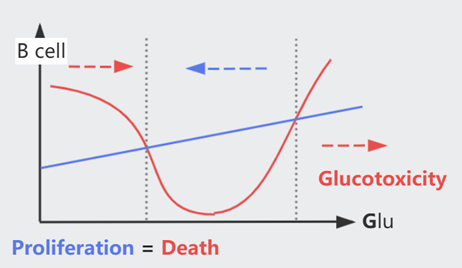
（注意，代偿需要约一周来生成细胞，在达成前的这段时间，Insulin resistance 患者的血糖依然会有异常波动）
Lecture 9 Oscillator
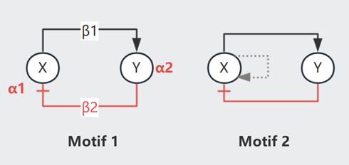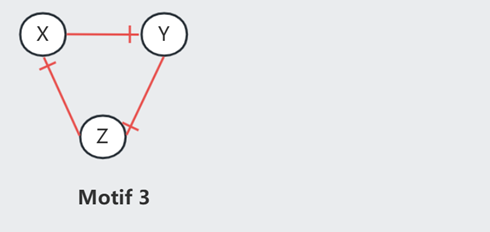
Oscillator 是形成节律的机制（e.g.心跳、生物钟），Lecture 4 中提到过 X |--> Y 会形成 Damped oscillation（即 Undamped 的简谐运动时因阻尼而逐渐停止）
{kind=link}
$$ \text{见 Motif 1 }\begin{cases} \frac{dx}{dt} = \beta_2 - \alpha_1x \quad \text{其中 } \beta_2 = f(y) \text{ 递减，$y_{st}$ 处斜率 } \frac{\partial f}{\partial y} \vert_{y_{st}}= \beta_1 \\ \frac{dy}{dt} = \beta_1 - \alpha_2y \quad \text{其中 } \beta_1 = g(x)\text{ 递增，$x_{st}$ 处斜率 } \frac{\partial g}{\partial x} \vert_{x_{st}}= \beta_2 \end{cases}$$
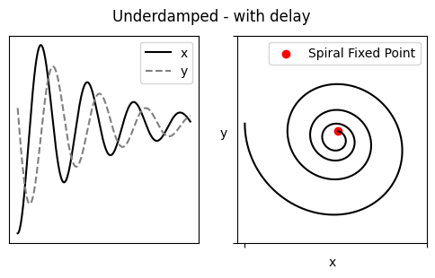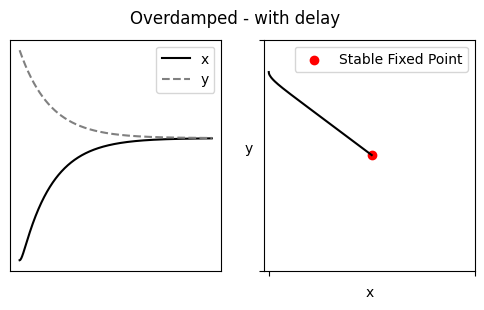
当 $(\alpha_1-\alpha_2)^2 < 4\beta_1\beta_2$ 时 Underdamped，即 $x$、$y$ 的留存时间不应相差过大，feedbacks $\beta$ 也不可以太微弱
Damped oscillation 最终将收敛，若想达成持续的节律，需要周期性的干预推动（施加外力的频率 = trapped in Fixed Point 的频率），即 Noise-induced oscillation. 这个外力可以是 X with PAR（Motif 2），在 X 浓度超过某一阈值后自加速生成 X、然后被抑制至低于阈值（过程类似一个 spike _|_）
此外，Repressilator（Motif 3）也可以产生周期曲线，不过此时 XYZ 曲线不再 in phase.
频率，主要是由 delay 控制，即生物反应所需要的时间。Motif 2 中可以在维持恒定振幅的情况下调节频率，因为它受外力 Noise 的调节。但如果不减小 Motif 3 的振幅，就不能改变它的频率。
Lecture 10
生物的进化过程，实际上就是通过改变基因型，不断提升自身在这个环境下的适应度。以 E.coli 为例，测算负责分解 lactose 的 lacZ 对 Fitness 的影响：定义 Fitness: Growth Rate，Property: lacZ protein
注意，E.coli还可以分解其它营养物质，而 lacZ 的存在可以增加 Growth Rate。约定在 lactose 不限量的情况下，每一个 lacZ 带来的增速为 Bo.
对于 WildType E.coli 而言，培养皿中更多 lactose 时会生成更多 lacZ，lactose 不限量的情况下最高可达成 lacZ = 60k per cell。
IPTG 的结构近似 lactose，它可以诱导生成 lacZ，但不可用于细胞生长，即生成 lacZ 的 COST。用 IPTG 取代 lactose 进行实验，在 lacZ = 60k 时，Growth Rate 下降了 5%，即 Co * 60k = 5%；在 lacZ = 1.8 * 60k = M 时，细胞死亡。
于是，在 lacZ = Z,lactose = L 时
Fitness(Z,L) = BENEFIT(Z,L) - COST(Z)
COST(Z)= Co * Z / (1 - Z/M)
BENEFIT(Z,L)= Bo * Z * L / (K + L)
其中 Binding coefficient K 即 Z+L <--(K)--> ZL
计算 $\frac{dFitness}{dZ}=0$ 可得这个环境的最优 $Z_{opt} = M (1- [\frac{Co(K+L)}{Bo \cdot L}]^{1/2})$，也知从 lacZ 中获利的 lactose $L$ 阈值是 $Co(K+L)=Bo \cdot L$
如果遇见 lactose 的几率很高，则 Fitness(Z,L) 在大多数情况下有利，即更加适应环境，进化过程将倾向于保留这个基因。
Lecture 11
为了在复杂环境中生存，生物性状是在对多个目标进行取舍后的结果
[Gene1,2,3..] ---> Performance(Task1) \
Genotype ---> Phenotype ---> Performance(Task2) ---> Fitness(i.e. Offsprings)
---> Performance(Task3) /
以 Performance(TaskX) 为坐标轴组成一个空间，对于每个 Task 都有一个最优模型 Archetype。综合 Fitness 最优的 Phenotype 可以分布在如图红色区域，即距离各 Archetype 欧氏距离之和最小的区域。
一些生物选择均衡发展，另一些选择成为某方面的专家（图示中 靠近某一个 Archetype）
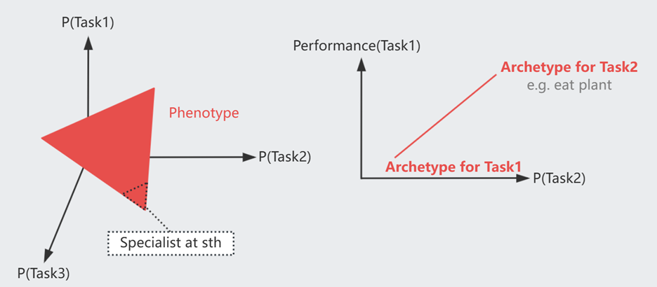
Lecture 12
在进行进化模拟时，最简单的方法是将个体视为 Gate 网络：
Genome ---------**********++++++++++........
Gene1 Gene2 Gene3 ...
Gate1 Gate2 Gate3 ...
Gate 设定为接收 2 个 0/1 输入:
| InputA | InputB | AND | NAND | XOR | OR |
|---|---|---|---|---|---|
| 0 | 0 | 0 | 1 | 0 | -- |
| 0 | 1 | 0 | 1 | 1 | -- |
| 1 | 0 | 0 | 1 | 1 | -- |
| 1 | 1 | 1 | 0 | 0 | -- |
模拟步骤很简单：已知优化目标 OUTPUT 和一组可能的输入组合
0. 有一个初始群体的 Genome 网络
1. Each Individual get 10 offsprings
- Rewire network [Mutation]
- add/del Gate [gene gain/lost]
2. Each offspring:
loop through all possible Input stress,
then Calculate Fitness = C/A - gate_Err
C = num of Correct OUTPUTs
A = num of possible input set [1,1,0,1] (16 for 4 gates)
gate_Err = err * num_of_gates
3. 选择 top 50% Fitness 的子代个体作为下一个 Loop 的初始群体
有趣的是，如果优化目标恒定不变 [GoalA]，最终得到优化网络是 Non Modular（有点类似过拟合？），但如果每隔几代交替使用优化目标 [GoalA,GoalB]，最终得到优化网络 Modular --- 更符合实际的生物网络
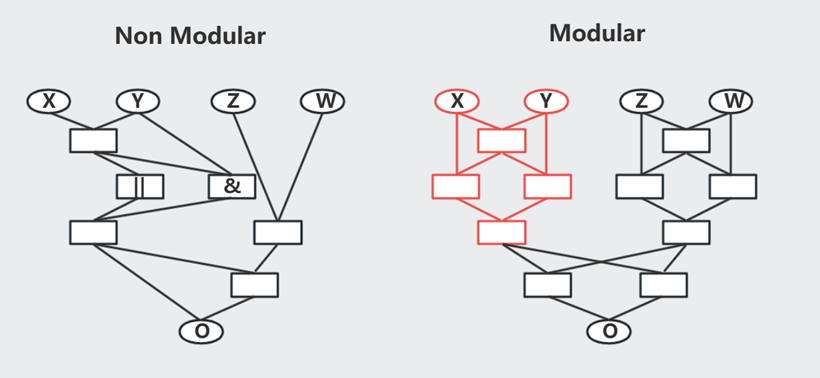